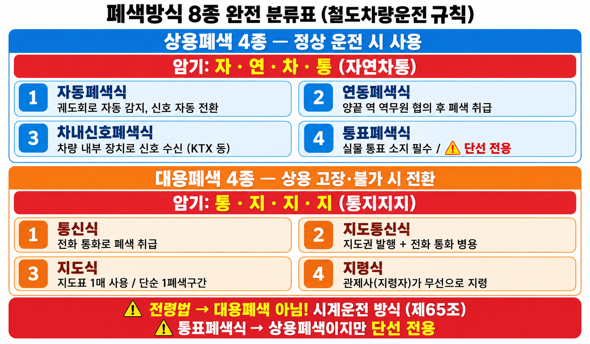

07-05 폐색방식 종류 — 상용폐색 6종 · 대용폐색 4종 · 고정폐색 vs 이동폐색
§ 0. 먼저 알고 가는 용어 — 이 단원을 이해하기 위한 선행 개념
① 폐색 (Block)
한 구간에 한 열차만 운행하게 하는 원칙. 동일 구간에 두 열차가 동시에 진입하면 추돌(충돌)이 발생하므로, 선행열차가 구간을 완전히 벗어나기 전까지 후속열차의 진입을 금지한다.
→ 연결: §1 폐색구간 정의, §2 상용폐색 6종
② 폐색구간 (Block Section)
폐색 원칙을 적용하는 구간 단위. 구간의 최소 길이는 열차의 최대 제동거리 + 안전 여유거리로 결정한다. 이 거리 이내에 두 열차가 함께 있으면 추돌 위험이 있다.
→ 연결: §1 폐색구간 길이 기준, §2 자동폐색·이동폐색
③ 상용폐색 vs 대용폐색
상용폐색(常用閉塞): 정상 운영 시 사용하는 폐색방식. 대용폐색(代用閉塞): 상용폐색이 고장·불능 상태일 때 임시로 사용하는 방식.
→ 연결: §2 상용폐색 6종, §3 대용폐색 4종
§ 1. 폐색의 필요성과 폐색구간
개념01 왜 폐색이 필요한가?
핵심 원리: 열차는 자동차와 달리 레일 위를 달리므로 갑작스러운 방향 전환이 불가능하고, 제동거리가 수백 미터에 달한다. 동일 폐색구간에 두 열차가 동시에 진입하면 추돌·충돌 위험이 크게 증가하므로, 후속열차의 진입을 통제한다. 따라서 "한 구간에 한 열차"라는 폐색 원칙은 철도 안전의 기본 전제다.
📌 폐색 → 폐색구간 → 폐색방식 이해 순서
폐색(충돌 방지 원칙)↓ 이 원칙을 공간적으로 구분하면
폐색구간(한 열차만 진입할 수 있는 구간 단위)
↓ 폐색구간 진입 허가를 어떻게 제어하느냐에 따라
폐색방식(자동폐색·연동폐색·통표폐색·차내신호폐색…)
개념02 폐색구간의 길이 결정 기준
| 항목 | 내용 |
|---|---|
| 폐색구간 최소 길이 | 열차의 최대 제동거리 + 안전 여유거리 |
| 이유 | 앞 구간 폐색신호기가 정지 현시될 때, 후속열차가 완전히 정차할 수 있어야 함 |
| 고속·밀집 운행 시 | 폐색구간을 짧게 나눠 운행 빈도를 높임 (선로용량 증대) |
★ 시험 포인트: 폐색구간 길이 = "최대 제동거리 + 안전 여유거리" — 평균속도나 표정속도 기준이 아니다.
§ 2. 상용폐색 6종 비교 ★★★ 핵심
개념03 상용폐색 6종 한눈에 보기
| 방식 | 원리·특징 | 적용 구간 | 핵심 암기 |
|---|---|---|---|
| ① 고정폐색 | 물리적으로 고정된 폐색구간 설정. 궤도회로 단위로 구간 분리. 선행열차 위치와 무관하게 구간 점유 여부 판단. | 일반 철도 (이동폐색 적용 전) | 고정된 구간 단위 |
| ② 이동폐색 | 선행열차 실제 위치 기반 가변 폐색구간. 후속열차는 선행열차 실제 제동거리 + 안전간격 뒤에서 추종. 궤도회로 불필요. | CBTC 적용 도시철도, KTCS-3 | 열차시격 단축·수송력 증강 ★ |
| ③ 연동폐색 | 역간 1폐색 구성. 신호기와 폐색장치를 단일화. 상대방 역 전원 사용. | 단선·복선 구간 | 상대방 역 전원 ★ |
| ④ 자동폐색 | 궤도회로로 열차를 자동 검지 → 폐색신호기를 자동 제어. 운행 횟수 증가. | 단선·복선 구간 | 궤도회로 자동검지 ★ |
| ⑤ 차내신호폐색 | 지상 신호기 없이 운전실(Cab) 표시기에 신호 현시. ATC 시스템과 연계. | 고속철도·ATC 구간 | 지상 신호기 없음, ATC 연계 |
| ⑥ 통표폐색 | 통표(증표)를 기계로 발행·수거. 통표를 소지한 열차만 구간 진입 허가. 물리적 증표 방식. | 단선 전용 ★ (복선 불가) | 통표(Token) = 단선 전용 ★★ |
⛔ 함정1: 통표폐색식 = 단선 전용 — 복선 구간에서는 절대 사용 불가.
⛔ 함정2: 연동폐색식 전원 = 상대방 역 전원 (자역 전원이 아님).
⛔ 함정3: 이동폐색 = 궤도회로 불필요 (무선통신 기반). 자동폐색은 궤도회로 필요.
📝 기출 패턴
Q. 단선 구간에서만 사용하며 복선 구간에서는 사용할 수 없는 폐색방식은?
정답: 통표폐색식
오답함정: 연동폐색식 — 연동폐색식은 복선·단선 모두 사용 가능
📝 기출 패턴
Q. 연동폐색식에서 사용하는 전원은?
정답: 상대방 역 전원
오답함정: 자역(자기 역) 전원 — 연동폐색은 반드시 상대방 역 전원 사용
개념04 자동폐색식 상세
동작 원리: 궤도회로(레일에 약전류를 흘려 열차가 있으면 단락되는 원리)로 열차의 위치를 자동 검지한다. 검지 결과에 따라 폐색신호기가 자동으로 진행·정지를 현시한다. 취급원 개입 없이 자동으로 제어되므로 운행 횟수를 크게 늘릴 수 있다.
| 항목 | 내용 |
|---|---|
| 검지 방법 | 궤도회로 (레일 단락) |
| 제어 방법 | 폐색신호기 자동 현시 |
| 취급원 개입 | 불필요 (자동) |
| 효과 | 운행 횟수 증가, 선로용량 향상 |
| 적용 구간 | 단선·복선 모두 가능 |
§ 3. 대용폐색 4종 — 상용폐색 고장·불능 시
개념05 대용폐색 4종 분류
대용폐색 사용 조건: 상용폐색이 고장 또는 불능 상태가 되었을 때 임시로 사용하는 방식. 관제사와 기관사 간 무선통신 가능 여부에 따라 방식이 달라진다.
| 방식 | 사용 조건 | 핵심 구분 |
|---|---|---|
| ① 통신식 | 관제사와 기관사 간 무선통신이 가능할 때 | 무선 가능 → 통신식 ★ |
| ② 지도통신식 | 지도표 교부 가능 + 무선통신이 불가능할 때 | 무선 불가 → 지도통신식 ★ |
| ③ 지도식 | 통신 불가능 시 지도표만 사용하는 특별한 경우 | 통신 불가 + 특별 상황 |
| ④ 지령식 | 관제사의 지시에 따라 운전하는 방식 | 관제사 지령 기반 |
⛔ 함정: 통신식(무선 가능) ↔ 지도통신식(무선 불가) 순서 혼동 주의. "통신식"이 무선 가능인 것이 역설적으로 느껴질 수 있으나, 이름 그대로 무선통신을 쓰는 방식이다.
📝 기출 패턴
Q. 상용폐색 고장 시 관제사와 기관사 간 무선통신이 가능할 때 사용하는 대용폐색 방식은?
정답: 통신식
오답함정: 지도통신식 — 지도통신식은 무선통신이 불가능할 때 사용
📝 기출 패턴
Q. 대용폐색에서 관제사와 기관사 간 무선통신이 불가능할 때 사용하는 방식은?
정답: 지도통신식
오답함정: 통신식 — 통신식은 무선통신이 가능할 때 사용
§ 4. 고정폐색 vs 이동폐색 ★ 신유형 출제
개념06 고정폐색 vs 이동폐색 비교
| 항목 | 고정폐색 (Fixed Block) | 이동폐색 (Moving Block) |
|---|---|---|
| 폐색구간 | 물리적으로 고정 (궤도회로 단위) | 선행열차 실제 위치에 따라 가변 |
| 구간 점유 판단 | 구간 점유 여부 (선행열차 위치 무관) | 선행열차의 실제 위치 기반 |
| 궤도회로 | 필요 | 불필요 (무선통신 기반) ★ |
| 최소 열차 간격 | 폐색구간 1개 이상 | 제동거리 + 안전간격 |
| 효과 | 안전하나 열차 간격 고정 | 열차시격 단축·수송력 증강 ★ |
| 연계 기술 | 자동폐색, ATC | CBTC, KTCS-3 |
이동폐색 3대 필수 정보: ① 실시간 열차 위치 ② 열차 속도 ③ 안전 제동 관련 정보. 이 3가지를 기반으로 지상이 후속열차에 운행권한(MA, Movement Authority)을 동적으로 부여한다.
★ 이동폐색 = 열차시격 단축 + 수송력 증강 + 궤도회로 불필요. CBTC·KTCS-3과 세트로 암기.
⛔ 함정: 이동폐색 = 궤도회로 없음. 자동폐색은 궤도회로로 동작하는 고정폐색 방식이다. 혼동 주의.
📝 기출 패턴 (신유형)
Q. 선행열차의 실제 위치를 기반으로 후속열차의 허용 구간을 가변 설정하여 열차시격을 단축하는 폐색 방식은?
정답: 이동폐색 (Moving Block)
오답함정: 자동폐색 — 자동폐색은 고정폐색 방식으로 이동폐색만큼 시격 단축 효과가 없다
📌 그림 보는 법
① 화살표 방향으로 열차가 진행한다고 생각한다.② 고정폐색은 선로를 미리 정해진 폐색구간으로 나누고, 열차가 진입하면 해당 구간 전체를 점유한다.
③ 이동폐색은 고정된 구간 대신 선행열차의 실제 위치를 기준으로 제동거리 + 안전간격을 동적으로 확보한다.
④ 따라서 이동폐색은 후속열차가 더 가까이 추종할 수 있어 열차시격을 줄이고 수송력을 높일 수 있다.

VIS-07E | 고정폐색식 vs 이동폐색식 원리 비교
★ 고정폐색 = 구간이 고정 | ★ 이동폐색 = 안전경계가 열차를 따라 이동
★ 고정폐색 = 구간이 고정 | ★ 이동폐색 = 안전경계가 열차를 따라 이동
§ 5. 출제 함정 총정리 ★ 놓치면 감점
| 함정 유형 | 틀린 선택지 | 정답 |
|---|---|---|
| 통표폐색 적용 구간 | 복선 구간에도 사용 가능하다 | 단선 전용 — 복선 사용 불가 ★ |
| 연동폐색식 전원 | 자역(자기 역) 전원 사용 | 상대방 역 전원 사용 ★ |
| 이동폐색 특징 | 궤도회로로 열차를 검지한다 | 궤도회로 불필요 — 무선통신 기반 ★ |
| 대용폐색 선택 | 무선 가능 → 지도통신식 | 무선 가능 → 통신식 / 무선 불가 → 지도통신식 ★ |
| 폐색구간 길이 기준 | 열차의 평균 주행거리 | 최대 제동거리 + 안전 여유거리 ★ |
| 수동폐색식 | 현재 철도에서 사용 중인 폐색방식이다 | 수동폐색식은 과거 방식 — 현재 미사용 ★ |
§ 6. 수치 GATE — 07-05 수치 정리
| 수치 | 항목 | 출처 |
|---|---|---|
| 최대 제동거리 + 안전 여유거리 | 폐색구간 최소 길이 결정 기준 | 6.html / 4.html |
| 상용폐색 6종 | 고정·이동·연동·자동·차내신호·통표 | 6.html §PART8 |
| 대용폐색 4종 | 통신식·지도통신식·지도식·지령식 | 6.html §PART8 |
주의: 폐색신호기 확인거리(600m), 절대신호기·허용신호기 분류는 UNIT 07-01 신호기 기초에 기수록되어 있다. 이 UNIT에서는 폐색방식의 분류와 특징에 집중한다.
§ 7. VIS 암기카드 — 폐색방식 분류표
📌 분류 기준 주의
6.html 교재에서는 폐색방식의 기술적 개념을 고정폐색·이동폐색 등을 포함하여 폭넓게 설명한다. 반면 아래 VIS-061은 철도차량운전규칙에 따른 상용폐색 4종과 대용폐색 4종, 총 8종의 법령상 분류를 나타낸다. 두 분류 기준을 혼동하지 않는다.① 상용폐색 4종을 확인한다.
② 대용폐색 4종을 확인한다.
③ 교재의 고정폐색·이동폐색 등 기술적 분류와 법령상 분류를 구분한다.

VIS-061 | 법령 기준 폐색방식 8종 — 상용폐색 4종 + 대용폐색 4종
§ 8. 연결 단원 CROSS-REF
🔗 07-05와 연결되는 단원
| 연결 단원 | 연결 내용 | 참고 |
|---|---|---|
| 07-01 신호 기초 | 신호 현시 방식 — 자동폐색·차내신호폐색과 연계 | 자동폐색 → 폐색신호기 자동 현시 |
| 07-06 기본 궤도회로 | 자동폐색식의 열차 검지 원리 = 궤도회로 | 이동폐색은 궤도회로 불필요 — 대조적 |
| 07-08 연동장치·쇄정 | 연동폐색식의 신호기·선로전환기 연동 원리 | 연동폐색 → 연동장치가 안전 조건 확인 |
| 08-01 ATS·ATP·ATC·ATO | 차내신호폐색 ↔ ATC 시스템 연계 | ATC = 차내신호폐색의 핵심 기술 |
| 07-09 폐색시스템 | 이동폐색 ↔ CBTC·KTCS-3 연계 | KTCS-2=고정폐색, KTCS-3=이동폐색 |
§ 9. 기출문제 8문항 — 풀고 나서 § 10 정답 확인
【1】 출제: signal sig_268 · 난도 S
다음 중 단선 구간에서만 사용할 수 있으며 복선 구간에서는 사용할 수 없는 폐색 방식은?
① 자동폐색식
② 연동폐색식
③ 통표폐색식
④ 차내신호폐색식
【2】 출제: signal sig_269 · 난도 S
연동폐색식에서 사용하는 전원은?
① 자역(자기 역) 전원
② 상대방 역 전원
③ 관제소 공급 전원
④ 비상 배터리 전원
【3】 출제: signal sig_270 · 난도 A+
궤도회로로 열차를 자동 검지하여 폐색신호기를 자동 제어하며 운행 횟수를 증가시키는 폐색 방식은?
① 연동폐색식
② 통표폐색식
③ 자동폐색식
④ 지도통신식
【4】 출제: signal sig_271 · 난도 A+
상용폐색이 고장 또는 불능 시 관제사와 기관사 간 무선통신이 가능할 때 사용하는 대용폐색 방식은?
① 지도식
② 지도통신식
③ 통신식
④ 전령법
【5】 출제: signal sig_272 · 난도 A+
대용폐색에서 관제사와 기관사 간 무선통신이 불가능할 때 사용하는 방식은?
① 통신식
② 지도통신식
③ 지도식
④ 전령법
【6】 출제: signal sig_273 · 난도 A+
선행열차의 실제 위치를 기반으로 후속열차의 허용 구간을 가변 설정하여 열차시격을 단축하는 폐색 방식은?
① 자동폐색 (고정폐색)
② 연동폐색
③ 이동폐색 (Moving Block)
④ 차내신호폐색
【7】 출제: railway-king rk_ch82_01
폐색구간의 길이를 결정하는 기준으로 가장 옳은 것은?
① 열차의 평균 주행거리 + 운전간격
② 열차의 최대 제동거리 + 안전 여유거리
③ 열차의 정차거리 + 신호등 간 거리
④ 열차의 표정속도 + 제동률
【8】 출제: railway-king rk_ch82_09
현재 철도에서 쓰이고 있는 폐색방식이 아닌 것은?
① 수동폐색
② 자동폐색
③ 차내신호폐색
④ 연동폐색
§ 10. 정답·해설
【1】 ③
【2】 ②
【3】 ③
【4】 ③
【5】 ②
【6】 ③
【7】 ②
【8】 ①
【1】 sig_268 · 난도 S
정답 ③ 통표폐색식
통표폐색식은 통표(증표)를 소지한 열차만 구간 진입이 허가되는 방식으로, 단선 구간 전용이다. 복선 구간에서는 사용할 수 없다. 자동폐색식·연동폐색식·차내신호폐색식은 복선·단선 모두 사용 가능하다.
⚠ 오답함정: 연동폐색식은 복선·단선 모두 가능 — 통표폐색식만 단선 전용이다.
【2】 sig_269 · 난도 S
정답 ② 상대방 역 전원
연동폐색식은 역간 1폐색 구성이며 신호기와 폐색장치를 단일화한다. 핵심 특징은 자역(자기 역) 전원이 아닌 상대방 역 전원을 사용한다는 점이다.
⚠ 오답함정: 자역 전원 사용이라고 혼동하기 쉬움. 연동폐색 = 상대방 역 전원이 정답.
【3】 sig_270 · 난도 A+
정답 ③ 자동폐색식
자동폐색식은 궤도회로로 열차를 자동 검지하여 폐색신호기를 자동 제어한다. 취급원 개입 없이 운행 횟수를 늘릴 수 있어 선로용량 향상에 효과적이다. 연동폐색식은 폐색취급원이 필요하고, 통표폐색식은 물리적 통표를 사용한다.
⚠ 오답함정: 연동폐색식 — 연동폐색은 취급원이 개입하며 자동검지 방식이 아니다.
【4】 sig_271 · 난도 A+
정답 ③ 통신식
대용폐색 방식은 무선통신 가능 여부로 구분한다. 관제사와 기관사 간 무선통신이 가능하면 통신식, 무선통신이 불가능하면 지도통신식을 사용한다.
⚠ 오답함정: 지도통신식 — 지도통신식은 무선통신이 불가능할 때 사용하는 방식이다.
【5】 sig_272 · 난도 A+
정답 ② 지도통신식
무선통신이 불가능할 때는 지도통신식을 사용한다. 통신식은 무선통신이 가능할 때, 지도통신식은 무선통신이 불가능할 때 사용한다는 점을 구분해야 한다.
⚠ 오답함정: 통신식 — 통신식은 무선통신이 가능할 때 사용하는 방식이다.
【6】 sig_273 · 난도 A+
정답 ③ 이동폐색 (Moving Block)
이동폐색은 선행열차의 실제 위치를 기반으로 후속열차의 허용 구간을 가변 설정한다. 이를 통해 열차시격을 단축하고 수송력을 증강시킨다. 궤도회로가 불필요하며 CBTC·KTCS-3과 연계된다.
⚠ 오답함정: 자동폐색 — 자동폐색은 고정폐색 방식으로 궤도회로를 사용하며 이동폐색만큼 시격 단축 효과가 없다.
【7】 rk_ch82_01
정답 ② 열차의 최대 제동거리 + 안전 여유거리
폐색구간의 최소 길이는 열차가 폐색신호기의 정지 신호를 보고 완전히 정차할 수 있는 거리로 결정한다. 이는 열차의 최대 제동거리에 안전 여유거리를 더한 값이다. 후속열차의 추돌 방지를 위한 최소 안전구간 확보 기준이다.
⚠ 오답함정: 평균 주행거리나 표정속도 기준이 아니라 최대 제동거리가 기준임.
【8】 rk_ch82_09
정답 ① 수동폐색
현재 철도에서 사용되는 폐색방식은 자동폐색식·연동폐색식·차내신호폐색식·통표폐색식 등이다. 수동폐색식은 과거에 사용된 구식 방식으로 현대 철도에서는 사용하지 않는다.
⚠ 오답함정: "현재 사용 중인 방식이 아닌 것"을 묻는 문제 — 수동폐색이 정답.